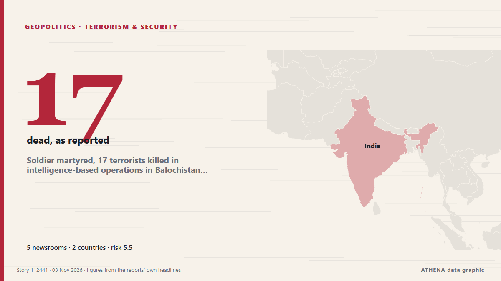

الإرهاب والأمن
برعايةبرعاية  Cybernetics and Artificial Intelligence Lab Welcome to the Cybernetics and Artificial Intelligence Laboratory, established at the Department of Business Administration of the National and Kapodistrian University of Athens. The lab is headed by Professor Dimitrios Thomakos. The lab aims to do research that can be published in top venues. Our research uses tools and methods of Artificial Intelligence, and lies in the following areas: - Forecasting - Decision making - Cyber security - Finance We are always looking forward to collaborating with exceptional students!
Cybernetics and Artificial Intelligence Lab Welcome to the Cybernetics and Artificial Intelligence Laboratory, established at the Department of Business Administration of the National and Kapodistrian University of Athens. The lab is headed by Professor Dimitrios Thomakos. The lab aims to do research that can be published in top venues. Our research uses tools and methods of Artificial Intelligence, and lies in the following areas: - Forecasting - Decision making - Cyber security - Finance We are always looking forward to collaborating with exceptional students!
| 21 أكتوبر | 0 |
|---|---|
| 22 أكتوبر | 0 |
| 23 أكتوبر | 0 |
| 24 أكتوبر | 0 |
| 25 أكتوبر | 0 |
| 26 أكتوبر | 0 |
| 27 أكتوبر | 1 |
| 28 أكتوبر | 0 |
| 29 أكتوبر | 1 |
| 30 أكتوبر | 0 |
| 31 أكتوبر | 0 |
| 1 نوفمبر | 4 |
| 2 نوفمبر | 4 |
| 3 نوفمبر | 2 |
تُعرض العناوين بالإنجليزية كما نُشرت.

Soldier martyred, 17 terrorists killed in intelligence-based operations in Balochistan: ISPR
A soldier was martyred and 17 terrorists were killed in two intelligence-based operations (IBOs) in Balochistan’s Kachhi and Kharan districts, the military’s media affairs wing said on Tuesday. من Dawn
Bomb attack in western Colombia kills 4, says governor
The explosives-laden truck detonated near a military base in Planadas, damaging a hospital and several homes, according to local officials. من Free Malaysia Today
Syria Arrests Two ISIS Militants Involved in Assassinations
The two men are accused of carrying out a series of targeted killings, including the shooting of a Defense Ministry member, as Islamic State sleeper cells remain a security concern for Syria’s new… من Kurdistan24 (English)
Jordan will not allow terrorists to undermine its security and unity, King Abdullah says
Jordan will remain defiant in the face of any aggressor, King Abdullah II said on Monday, after a deadly terrorist attack on a church in the kingdom last month. من The National
Iran has not responded to Vance's letter yet: top security official
The Islamic Republic’s parliament speaker says a ‘carrot-and-stick approach’ has no effect on it. من The Business Times
US Open to Playing Constructive Role in Pakistan-Afghanistan tensions, Rubio Says
US Secretary of State Marco Rubio says Washington has heard Pakistan’s concerns about militant attacks it says originate in Afghanistan and is open to helping ease tensions between the neighbours. من Khaama Press